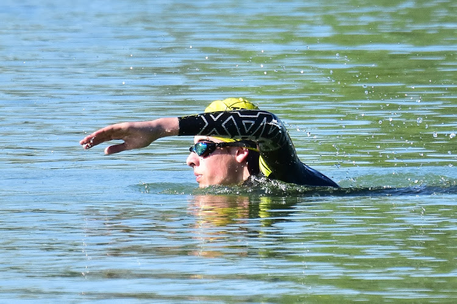

Hi, I’m Nolan Law
Student • Developer • Athlete • Musician
Learn More About MeWelcome to my Everything Site — a living archive of who I am and what I do. Here you’ll find my projects, academic progress, sports achievements, music journey, and more. It grows as I do, so come back anytime to see what’s new.

Projects
Explore my software experiments, coding challenges, and creative builds.

Academics
See my coursework, grades, and reflections on learning.
Sports
Track my triathlon times, refereeing experience, and badminton matches.
Music
Dive into the bands I’ve played in, my repertoire, and performance logs.